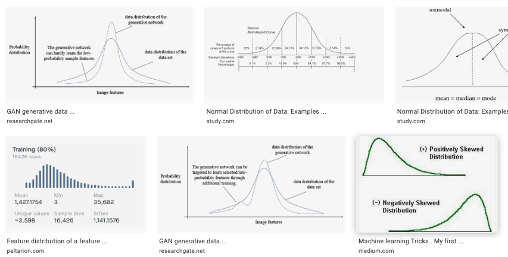

Features of any distribution

Every data follows some distribution and every distribution is defined with a set of features like mean, median, mode etc.. In this section we will address these features.
In this section we will try to understand following things:
1. Features of every distribution
I. Measure of central tendency
a. Mean
b. Media
c. Mode
II. Measure of Spread
d. Range
e. Midrange
f. Inter Quartile Range (IQR)
g. Variance
h. Standard deviation
i. Z-Score
2. Understanding z-score and z-table
3. Some Problems on z-score
4. Example problem
5. How shifting and scaling impacts mean, median, IQR & standard deviation
Please Note: Though the images in this section are corresponding to the normal distributions but these features can also be used on the other distributions too. If the definations are not clear, you can jump to the "Example problem" section to understand these features more intuitively.
1. Features of every distribution
There are 2 types of features in every distribution those are: Feasure that measure central tendency like mean, median and mode. Features that measure spread of the data like variance, standard deviation, range etc.. Let's understand these features:
Perhaps we might say that standard deviation makes more sense, mathematically and logically, than variance. The biggest reason for us to pay more attention to the standard deviation is that it has the same units as the original statistic/dataset. If a study results with an average of 75 people with a ] standard deviation of 3, we can say that the standard deviation is 3 people. It makes no sense to say that the variance is 9 square people, so variance has no units, usually.
2. Understanding z-score and z-table
As mentioned above: A z-score is a measure of the number of standard deviations a particular data point is away from the mean.
All values that are below the mean have negative z-scores, while all values that are above the mean have positive z-scores.
Z-scores range from -3 standard deviations up to +3 standard deviations.
Z-table also called as standard normal table gives the percentage of area from mean to z-score in standard normal distribution.
https://www.intmath.com/counting-probability/z-table.php
3. Some Problems on z-score and z-table
Problem 1: On a nationwide math test, the mean was 65 and the standard deviation was 10. If Robert scored 81, what was his z-score?
z = ( x-µ ) / σ where x is score, σ is SD and µ is mean
= ( 81-65 ) / 10
z-score = 1.60
This states that Robert scored 1.60 standard deviation above the mean
Problem 2: Given a standard normal distribution find the probability of choosing the value that is greater than 1 standard deviation away
Given z = 1 We need to find z-table(z)
We can refer to https://www.intmath.com/counting-probability/z-table.php
z-table(z) = 0.3413
Hence the percentage of area from mean to z-score = 0.3413
But We are interested in the area/probability that is greater than 1 standard deviation away
In Standard normal distribution, the area above the mean is 0.50
Hence the area/probability that is greater than 1 standard deviation away = 0.50 - 0.3413
Hence the probability is 0.16
Hence the area/probability that is greater than 1 standard deviation away is 16%
4. Example problem
Bar graph shows the scores obtained by 5 students in Midterm and Final. Let's try to answer following questions:
1. Median score for the final exam:
step1: List down all the scores in final exam: 100, 100, 100, 75, 80
step2: Sort all these exams: 75, 80, 100, 100, 100
step3: find the score which is in middle of this list: 100
answer: 100
2. Midrange of midterm scores:
step1: List all mid term scores: 90, 90, 60, 100, 80
step2: Find highest and lowest score in this lis: highest=100, lowest=60
step3: midrange = ( highest + lowest ) / 2
= ( 100 + 60 ) /2
midrange = 80
answer: 80
3. Average of final exam scores:
step1: List all final exam scores: 100, 100, 100, 75, 80
step2: Find the total number of samples present in above list: n=5
step3: average = sum of all numbers / n
= ( 100+100+100+75+80) / 5
average = 91
answer: 91
4. Mode for final exam scores:
step1: List all final exam scores: 100, 100, 100, 75, 80
step2: Find the frequency of each score
Freq ( 100 ) = 3
Freq ( 75 ) = 1
Freq ( 80 ) = 1
step3: Find the most frequent score: That is 100
mode = 100
answer: 100
5. Range of midterm scores:
step1: List all mid term scores: 90, 90, 60, 100, 80
step2: Find highest and lowest score in this lis: highest=100, lowest=60
step3: range = highest - lowest
= 100 - 60
= 40
answer: 40
5. How shifting and scaling impacts mean, median, IQR & standard deviation
* Shifting will shift the Measure of central tendencies like mean and median
* Scaling will scale the Measure of central tendencies like mean and median
* Shifting will not shift the Measure of spread tendencies like standard deviation and Inter quartile range
* Scaling will scale the Measure of spread tendencies like standard deviation and Inter quartile range
In the above cases shifting refers to addition and deletion. Scaling refers to multiplication and devision
with a number
References
https://www.khanacademy.org/math/statistics-probability/analyzing-categorical-data/one-categorical-variable/v/reading-bar-charts-3?modal=1
https://www.khanacademy.org/math/cc-sixth-grade-math/cc-6th-data-statistics/mean-and-median/v/statistics-intro-mean-median-and-mode
https://towardsdatascience.com/mean-median-mode-which-central-tendency-measure-to-use-when-9fb3ebbe3006
https://byjus.com/maths/mean-median-mode/